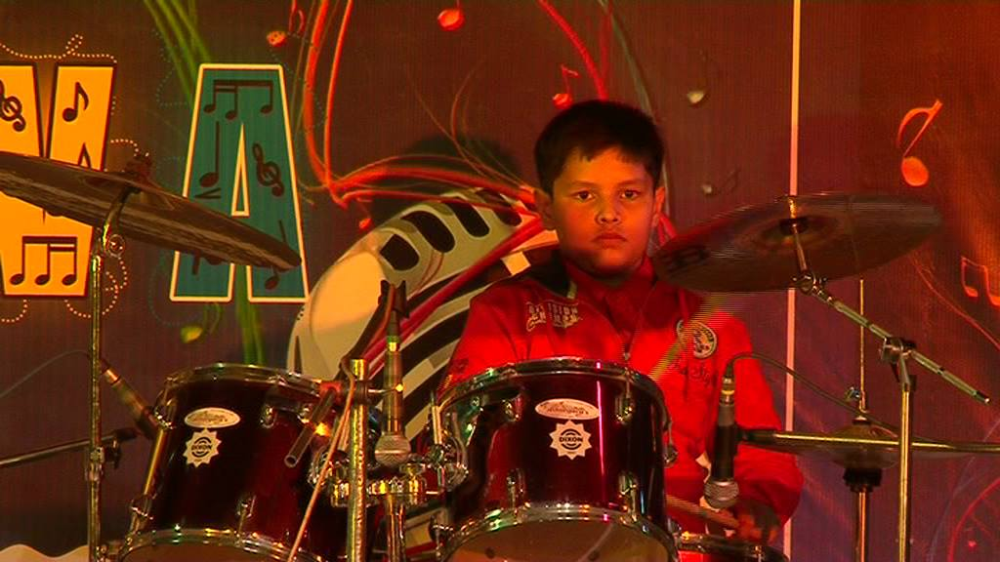

Bio-Data
Aryaman Mishra
Personal Information:
Name:Aryaman Mishra

Date of Birth:13-10-2002
Father's Name:Vikas Mishra(Section Officer at CSIR-CIMAP)
Address:
22-A,Vinayak Puram,Sector-12,Vikas Nagar,Lucknow.
Nationality:Indian
Participation:
- Inter-house debate
- Inter-campus Speech Competition
- AI-Conclave
- Skits Competition:
Working:
- External affairs director At Nerdsploit at VIT Bhopal.
- Alumni affairs at CMS.
- Working with VIT Hack Club.
Experience:
1.Foreign exchange intern at HKU.
2.Correspondent for NextGen Scholarship programme.
3.Chief Executive Officer at AEW in collaboration with NJPW.
Courses Learnt:
- Artificial Intelligence for Beginners
- Machine Learning
- Knowledge Management
- IOT and it's Applications
Achievements:
1st position in interhouse debate.
1st position in speech competition.
1st position in monologue.
1st position in innivations.
Projects:
Website called MegamovieReviews and GameStop.
Contact:
Email:aryaman.mishra73@gmail.com
Phone:6390159999